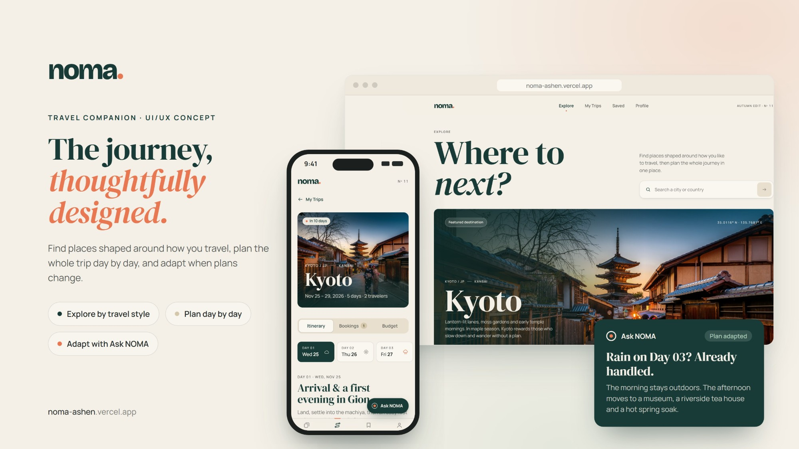
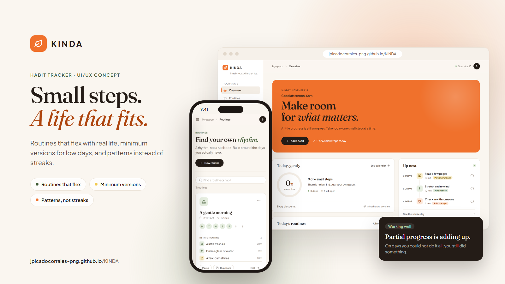
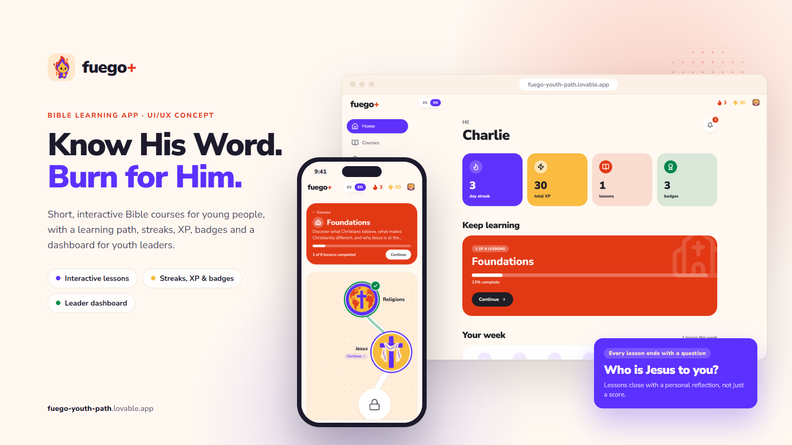

JUNIOR UX/UI DESIGNER · COSTA RICA
UX/UI design
that feels good
I'm Jazmín, a junior UX/UI designer who turns research and bold visuals into digital products people enjoy using.
Trilingual: EN · ES · PT
AI-assisted workflow
Based in Costa Rica
SCROLL A LITTLE01 — 09
A FEW THINGS I'VE BEEN MAKING
Selected work
Small ideas, big feelings. Three concept projects built around real-life needs.


MADE WITH
INTENTION
INTENTION
✿
Every detail has a reason.A LITTLE ABOUT ME
Hi, I'm
Jazmín♡!
I’m a junior UX/UI designer with a passion for creating thoughtful visual experiences and meaningful digital products. I enjoy exploring ideas, shaping visual identities, and designing interfaces that balance aesthetics, clarity, and functionality. With an eye for detail and a curiosity for how things work, I approach each project as an opportunity to turn concepts into intuitive, purposeful experiences.
- ⌕UX research
- ▧UI design
- ↗︎Prototyping
- ✿Visual design
- 〰︎Motion
GOOD WORK, GOOD PROCESS
How I get there
A little structure makes room for a lot of creativity.
Research & Understand
Understand the problem, the target audience and their needs. Explore the context, gather insights and identify opportunities through research and references.
Define & Strategize
Establish the project's direction by defining its goals, core features, information architecture and user flows. Align functionality with the overall vision.
Explore & Design
Explore visual references, establish a cohesive design language and shape the interface through typography, color, composition and visual hierarchy.
Prototype & Build
Transform ideas into interactive experiences. Use AI-assisted tools to accelerate development, explore possibilities and refine each screen with attention to detail.
Evaluate & Refine
Review the experience, gather feedback and identify areas for improvement. Iterate on the design to make the product clearer, more intuitive and more consistent.
MY CREATIVE TOOLBOX
Tools of the trade
The right tool for the right moment. Always curious about what's next.
Design
- FFigma
- PsPhotoshop
- AiIllustrator
- IdInDesign
- AeAfter Effects
AI tools
LEARNING- ♡Lovable
- ✳︎Claude Code
- FFigma Make
Collaboration & code
- NNotion
- MMiro
- </>HTML
- #CSS
YOUR NEXT DESIGN BUDDY?
Let's create
something together
Open to junior UX/UI opportunities and excited to grow as part of a creative team.